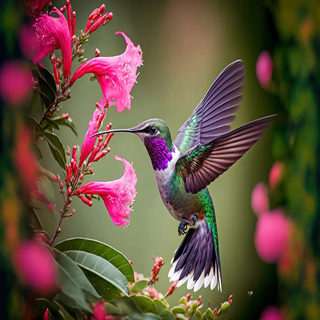
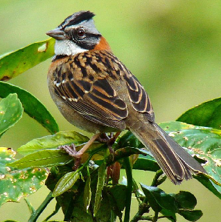
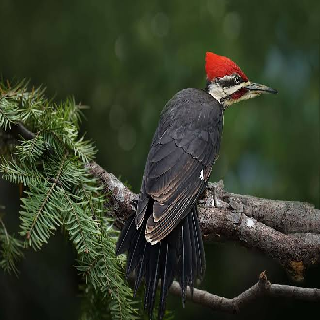
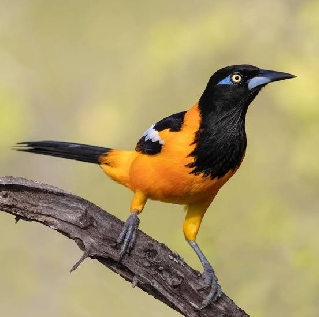
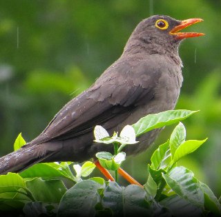
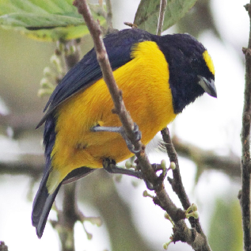

- Tamaño: Muy pequeñas
- Colores: Brillantes
- Habilidad: Capacidad de volar en todas direcciones
- Alimentación: néctar

- Características: Pequeñas con un característico copete en la cabeza
- Hábitat: Áreas urbanas y rurales
- Canto: Melodioso

- Habilidad: Perforar la corteza de los árboles con su pico
- Alimentación: Insectos encontrados bajo la corteza
- Cuerpo: Robusto
- Colas: Fuertes

- Nombre Común: Turpial
- Tamaño: Mediano
- Plumaje: Generalmente amarillo y negro
- Canto: Melodioso
- Distribución: América Central y del Sur
- Hábitat: Bosques, áreas abiertas y jardines
- Alimentación: Frutos, insectos y pequeños animales

- Tamaño: Mediano
- Plumaje: Oscuro con flancos anaranjados o rufos
- Hábitat: Bosques montanos y áreas con vegetación densa en los Andes
- Alimentación: Frutos e insectos
- Canto: Melodioso

- Familia: Fringillidae
- Características: Pequeños pájaros de colorido plumaje
- Canto: Melodioso
- Distribución: Principalmente en América Central y del Sur